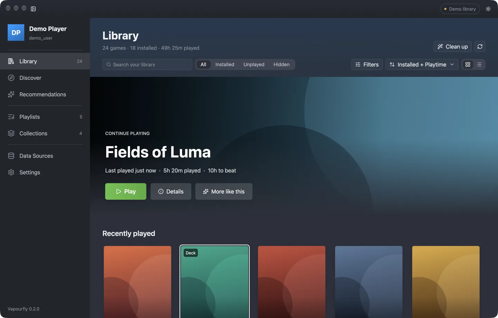
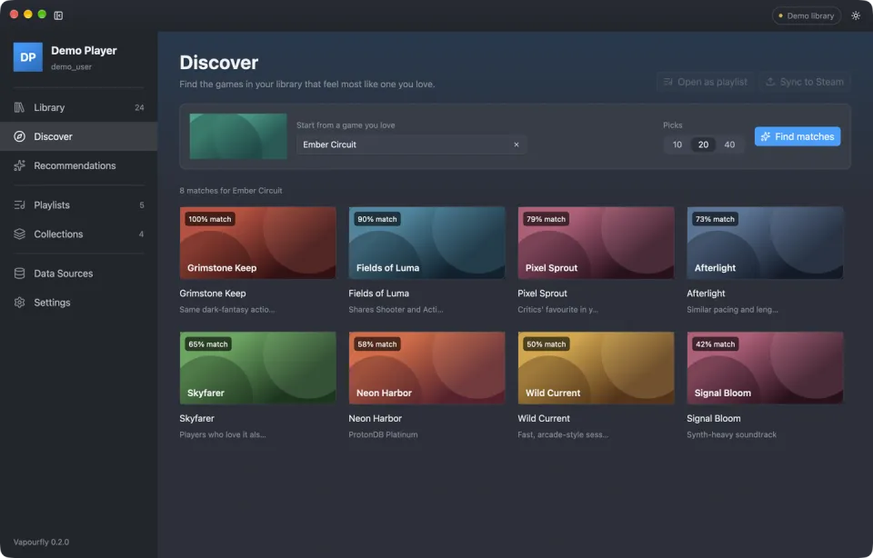
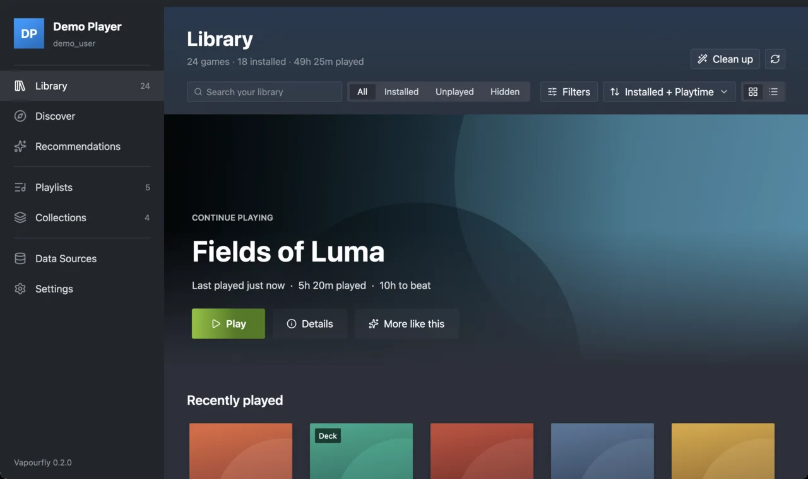
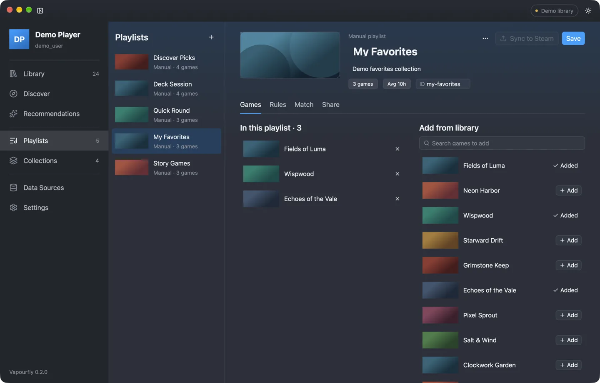
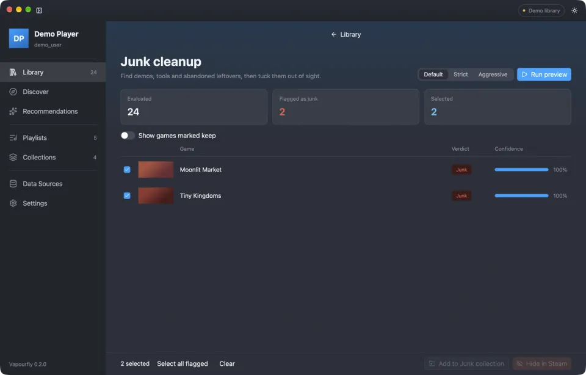
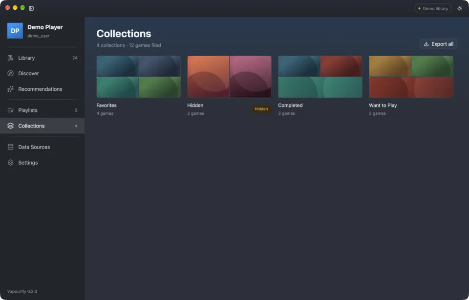
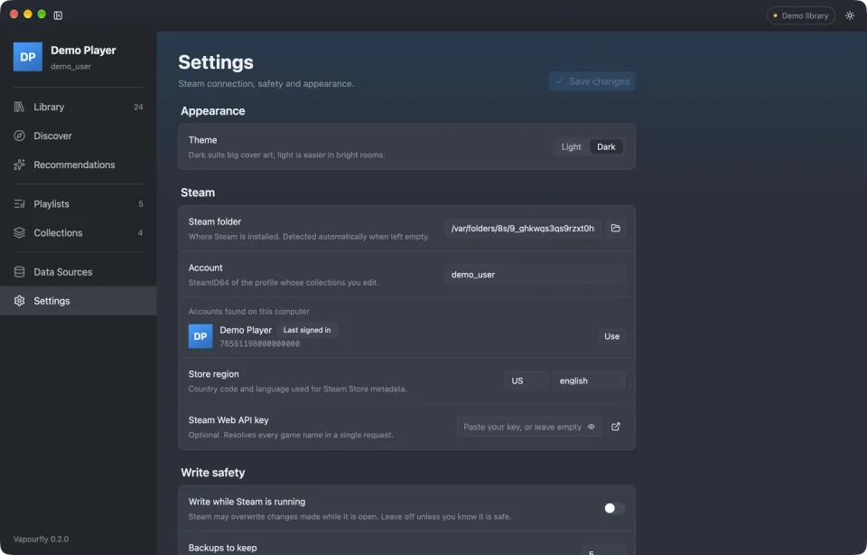

Library
Search, filter and sort every game you own. Filter by Deck compatibility, ProtonDB tier, genre, playtime or time to beat.

Playlists, picks and cleanup for the Steam library you already own
Games you own that are on sale right now.
Recent, well-rated indies waiting in your backlog.
Co-op, local multiplayer and party games.
Deck-friendly, controller-ready, quick to finish.
Highly rated games you have never launched.
Long, acclaimed adventures for a free weekend.
Short sessions you can start and finish tonight.

vapourfly command line in one downloadSelect a platform below to download.
Builds are not notarized. The first time, right-click the app and choose Open.
Installation guideYour library never leaves your machine. Flip on offline mode and Vapourfly makes zero network calls.
Written in Rust and dual-licensed MIT or Apache-2.0. Read the code, file an issue or send a pull request.
Everything Vapourfly does on the desktop, sized for Steam Deck and played with a controller.

In Game Mode, Vapourfly opens fullscreen at 1280 × 800 with large type and big targets. Add it to Steam once with the bundled installer and it sits in your library next to your games.
The D-pad moves focus card by card, A selects and B goes back. LB and RB switch pages, the right stick scrolls, and Y jumps to search.
Text fields open the SteamOS on-screen keyboard, so naming a playlist on the couch takes seconds.
Tell Vapourfly how long you have. It picks installed, Deck-verified games that fit the time, and explains why.
Vapourfly reads what Steam already knows — installs, playtime, hidden games and collections — and adds completion times, ratings and Deck compatibility from public sources. Then it helps you decide what to play.

Search, filter and sort every game you own. Filter by Deck compatibility, ProtonDB tier, genre, playtime or time to beat.
Start from a game you love and find the ones in your library that feel the same. Or let it read your taste.
Say how long you have. Get a ranked shortlist sized to your session, with the reasons behind every pick.
Build playlists by hand or from rules, match them against your library, and sync them to Steam as collections.
Find demos, tools and abandoned leftovers. Every verdict shows its signals and confidence before anything moves.
Turn any playlist into a short VF1: code. Paste it into a chat; friends import it in one step.
One switch blocks every network call. Vapourfly keeps working from its local cache.
Every change to Steam is backed up first, with a checksum. Restore any backup from Settings.
Vapourfly writes to exactly one Steam file. It shows you the change first, backs the file up, and stays out of the way while Steam is running.
$ vapourfly junk apply --collection junk --dry-run Junk Apply ========== Collection: junk Junk games: 19 Diff: Collection 'junk': created App IDs to add: 19 Unchanged entries: 13 Dry run complete. No changes made. $ vapourfly junk apply --collection junk Error: must specify either --dry-run or --confirm $
Every write needs --dry-run or --confirm. In the app, a preview dialog comes first.
A timestamped backup with a SHA-256 hash is written before any change.
Changes go to a temporary file and are swapped in whole. If anything fails, the backup is restored.
Writes are refused while Steam is running, so Steam can never overwrite your edits.

Preview junk in Default, Strict or Aggressive mode, then add it to a Junk collection or hide it in Steam.
Clean up your library
Vapourfly syncs to Steam collections, so what you organize shows up in Steam on every device.
Share and sync playlists
Every feature is in the vapourfly CLI with table or JSON output, ready for your scripts.
| Platforms | |
|---|---|
| macOS | Apple Silicon (pre-built) Intel (build from source) |
| Linux | x86_64, including SteamOS on Steam Deck in Desktop Mode and Game Mode |
| Windows | x86_64 |
| Display & input | |
| Themes | Dark (default) and light |
| Steam Deck | Fullscreen 1280 × 800 in Game Mode SteamOS on-screen keyboard for text fields |
| Controllers | Steam Deck controls and Xbox-style gamepads |
| Views | |
| Play | Library, Discover, Recommendations |
| Organize | Playlists, Collections, Junk cleanup |
| System | Data Sources, Settings, Backups |
| Software | |
| Built with | Rust 1.99 and GPUI |
| License | MIT or Apache-2.0, at your option |
| Commands | |
|---|---|
| Setup | doctor, accounts list, settings |
| Library | scan, collections, junk, recommend |
| Playlists | playlist create | import | export | share | match | discoversync collection |
| Maintenance | cache refresh, sources status, backup list | restore, diagnostics export |
| Output | |
| Formats | Table or JSON |
| Playlists | vapourfly.playlist.v1 JSON and VF1: share codes |
| Data sources | |
| No key needed | Steam Store, ProtonDB, PCGamingWiki, HowLongToBeat |
| Optional keys | IGDB, RAWG, Steam Web API |
| Safety | |
| Writes | --dry-run or --confirm required |
| Backups | Timestamped, SHA-256 checked, last 5 kept by default |
| Network | --offline blocks every request |